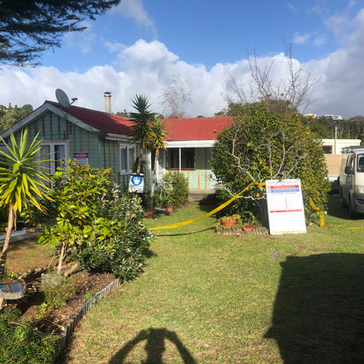
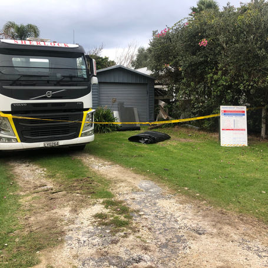
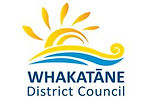
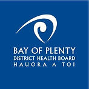

Sampling & consulting
The definitive way to determine whether asbestos is present is to have a sample tested by an independent accredited laboratory. We collect samples using appropriate procedures, arrange testing and provide clear recommendations.
Whakatāne • Bay of Plenty
Licensed sampling, consulting and removal for homes, workplaces, refurbishment and demolition projects.

What we do
The definitive way to determine whether asbestos is present is to have a sample tested by an independent accredited laboratory. We collect samples using appropriate procedures, arrange testing and provide clear recommendations.
Zero Fibres holds current certification and equipment for bonded asbestos-containing material and friable asbestos. An independent asbestos assessor signs off removal work as required.
About Zero Fibres
Zero Fibres is a New Zealand-owned asbestos removal company. We help people understand and manage asbestos-containing materials in workplaces and homes, reducing the risk of exposure to airborne fibres.
Director Joe Fenton is a qualified builder, and the company holds both Class A and Class B asbestos-removal licences. Project experience includes Christchurch, Wellington, Auckland and the Bay of Plenty.

Projects
Our approach puts containment, correct equipment, safe work practices and independent clearance at the centre of every removal project.
Frequently asked questions
Asbestos-containing materials were used in many building products from the 1940s through to the 1980s. They may be present in roofing, cladding, ceilings, wall linings, flooring, insulation and other construction materials. Testing is the only reliable way to confirm a suspect product.
Undamaged asbestos-containing material that is left undisturbed may not pose a major health hazard. Risk increases when material is damaged, cut, drilled, sanded or deteriorating, allowing fibres to become airborne.
Asbestos should be identified before work begins. Where required, arrange a refurbishment or demolition survey and have removal completed by an appropriately licensed asbestos-removal contractor.
Free quotes and practical advice, proven experience across different asbestos-removal classes, current licensing, professional service and a strong focus on safety.
Credentials


Contact
For inquiries, advice or a quote, call or email Zero Fibres.
Phone Joe to discuss the property, suspected material and the work you are planning.
Call 021 278 4703Send an email